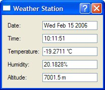

Sending and Receiving UDP Datagrams
The QUdpSocket class can be used to send and receive UDP datagrams. UDP is an unreliable, datagram-oriented protocol. Some application-level protocols use UDP because it is more lightweight than TCP. With UDP, data is sent as packets (datagrams) from one host to another. There is no concept of connection, and if a UDP packet doesn't get delivered successfully, no error is reported to the sender.

We will see how to use UDP from a Qt application through the Weather Balloon and Weather Station example. The Weather Balloon application mimics a weather balloon that sends a UDP datagram (presumably using a wireless connection) containing the current atmospheric conditions every 2 seconds. The Weather Station application receives these datagrams and displays them on screen. We will start by reviewing the code for the Weather Balloon.
class WeatherBalloon : public QPushButton
{
Q_OBJECT
public:
WeatherBalloon(QWidget *parent = 0);
double temperature() const;
double humidity() const;
double altitude() const;
private slots:
void sendDatagram();
private:
QUdpSocket udpSocket;
QTimer timer;
};
The WeatherBalloon class inherits from QPushButton. It uses its QUdpSocket private variable for communicating with the Weather Station.
WeatherBalloon::WeatherBalloon(QWidget *parent)
: QPushButton(tr("Quit"), parent)
{
connect(this, SIGNAL(clicked()), this, SLOT(close()));
connect(&timer, SIGNAL(timeout()), this, SLOT(sendDatagram()));
timer.start(2 * 1000);
setWindowTitle(tr("Weather Balloon"));
}
In the constructor, we start a QTimer to invoke sendDatagram() every 2 seconds.
void WeatherBalloon::sendDatagram()
{
QByteArray datagram;
QDataStream out(&datagram, QIODevice::WriteOnly);
out.setVersion(QDataStream::Qt_4_1);
out << QDateTime::currentDateTime() << temperature() << humidity()
<< altitude();
udpSocket.writeDatagram(datagram, QHostAddress::LocalHost, 5824);
}
In sendDatagram(), we generate and send a datagram containing the current date, time, temperature, humidity, and altitude:
QDateTime | Date and time of measurement | double | Temperature (in °C) | double | Humidity (in %) | double | Altitude (in meters) |
The datagram is sent using QUdpSocket::writeDatagram(). The second and third arguments to writeDatagram() are the IP address and the port number of the peer (the Weather Station). For this example, we assume that the Weather Station is running on the same machine as the Weather Balloon, so we use an IP address of 127.0.0.1 (QHostAddress::LocalHost), a special address that designates the local host.
Unlike the QAbstractSocket subclasses, QUdpSocket does not accept host names, only host addresses. If we wanted to resolve a host name to its IP address here, we have two choices: If we are prepared to block while the lookup takes place, we can use the static QHostInfo::fromName() function. Otherwise, we can use the static QHostInfo::lookupHost() function, which returns immediately and calls the slot it is passed with a QHostInfo object containing the corresponding addresses when the lookup is complete.
int main(int argc, char *argv[])
{
QApplication app(argc, argv);
WeatherBalloon balloon;
balloon.show();
return app.exec();
}
The main() function simply creates a WeatherBalloon object, which serves both as a UDP peer and as a QPushButton on screen. By clicking the QPushButton, the user can quit the application.
Now let's review the source code for the Weather Station client.
class WeatherStation : public QDialog
{
Q_OBJECT
public:
WeatherStation(QWidget *parent = 0);
private slots:
void processPendingDatagrams();
private:
QUdpSocket udpSocket;
QLabel *dateLabel;
QLabel *timeLabel;
...
QLineEdit *altitudeLineEdit;
};
The WeatherStation class inherits from QDialog. It listens to a particular UDP port, parses any incoming datagrams (from the Weather Balloon), and displays their contents in five read-only QLineEdits. The only private variable of interest here is udpSocket of type QUdpSocket, which we will use to receive datagrams.
WeatherStation::WeatherStation(QWidget *parent)
: QDialog(parent)
{
udpSocket.bind(5824);
connect(&udpSocket, SIGNAL(readyRead()),
this, SLOT(processPendingDatagrams()));
...
}
In the constructor, we start by binding the QUdpSocket to the port that the weather balloon is transmitting to. Since we have not specified a host address, the socket will accept datagrams sent to any IP address that belongs to the machine the Weather Station is running on. Then, we connect the socket's readyRead() signal to the private processPendingDatagrams() that extracts and displays the data.
void WeatherStation::processPendingDatagrams()
{
QByteArray datagram;
do {
datagram.resize(udpSocket.pendingDatagramSize());
udpSocket.readDatagram(datagram.data(), datagram.size());
} while (udpSocket.hasPendingDatagrams());
QDateTime dateTime;
double temperature;
double humidity;
double altitude;
QDataStream in(&datagram, QIODevice::ReadOnly);
in.setVersion(QDataStream::Qt_4_1);
in >> dateTime >> temperature >> humidity >> altitude;
dateLineEdit->setText(dateTime.date().toString());
timeLineEdit->setText(dateTime.time().toString());
temperatureLineEdit->setText(tr("%1 ° C").arg(temperature));
humidityLineEdit->setText(tr("%1%").arg(humidity));
altitudeLineEdit->setText(tr("%1 m").arg(altitude));
}
The processPendingDatagrams() slot is called when a datagram has arrived. QUdpSocket queues the incoming datagrams and lets us access them one at a time. Normally, there should be only one datagram, but we can't exclude the possibility that the sender would send a few datagrams in a row before the readyRead() signal is emitted. In that case, we can ignore all the datagrams except the last one, since the earlier ones contain obsolete atmospheric conditions.
The pendingDatagramSize() function returns the size of the first pending datagram. From the application's point of view, datagrams are always sent and received as a single unit of data. This means that if any bytes are available, an entire datagram can be read. The readDatagram() call copies the contents of the first pending datagram into the specified char * buffer (truncating data if the buffer is too small) and advances to the next pending datagram. Once we have read all the datagrams, we decompose the last one (the one with the most recent atmospheric measurements) into its parts and populate the QLineEdits with the new data.
int main(int argc, char *argv[])
{
QApplication app(argc, argv);
WeatherStation station;
station.show();
return app.exec();
}
Finally, in main(), we create and show the WeatherStation.
We have now finished our UDP sender and receiver. The applications are as simple as possible, with the Weather Balloon sending datagrams and the Weather Station receiving them. In most real-world applications, both applications would need to both read and write on their socket. The QUdpSocket::writeDatagram() functions can be passed a host address and port number, so the QUdpSocket can read from the host and port it is bound to with bind(), and write to some other host and port.
|